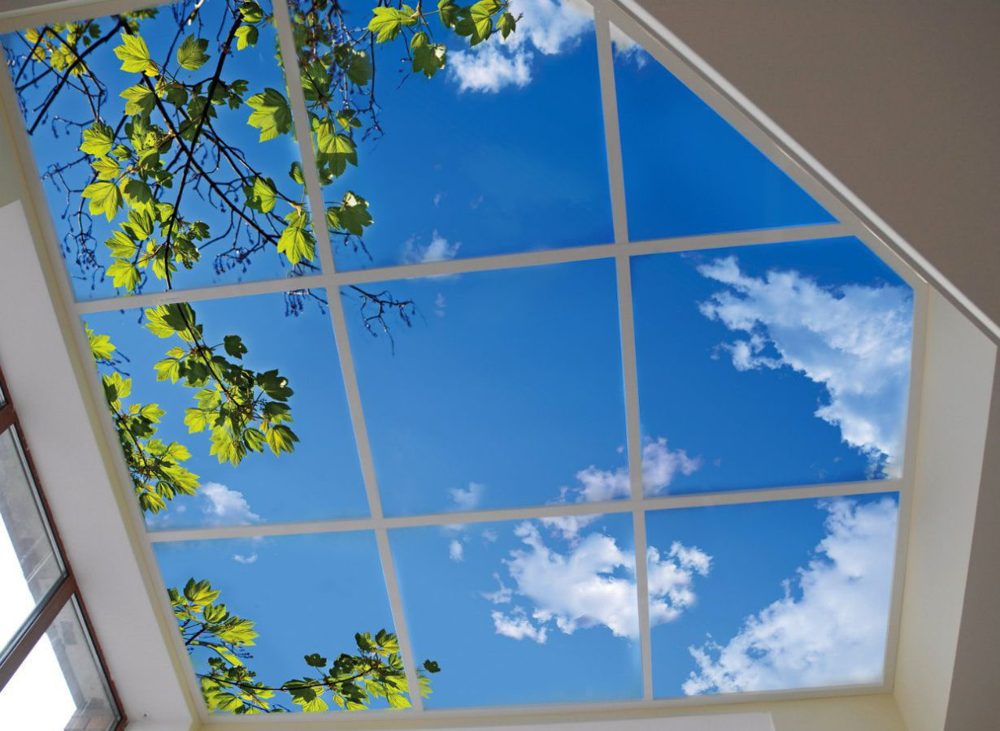
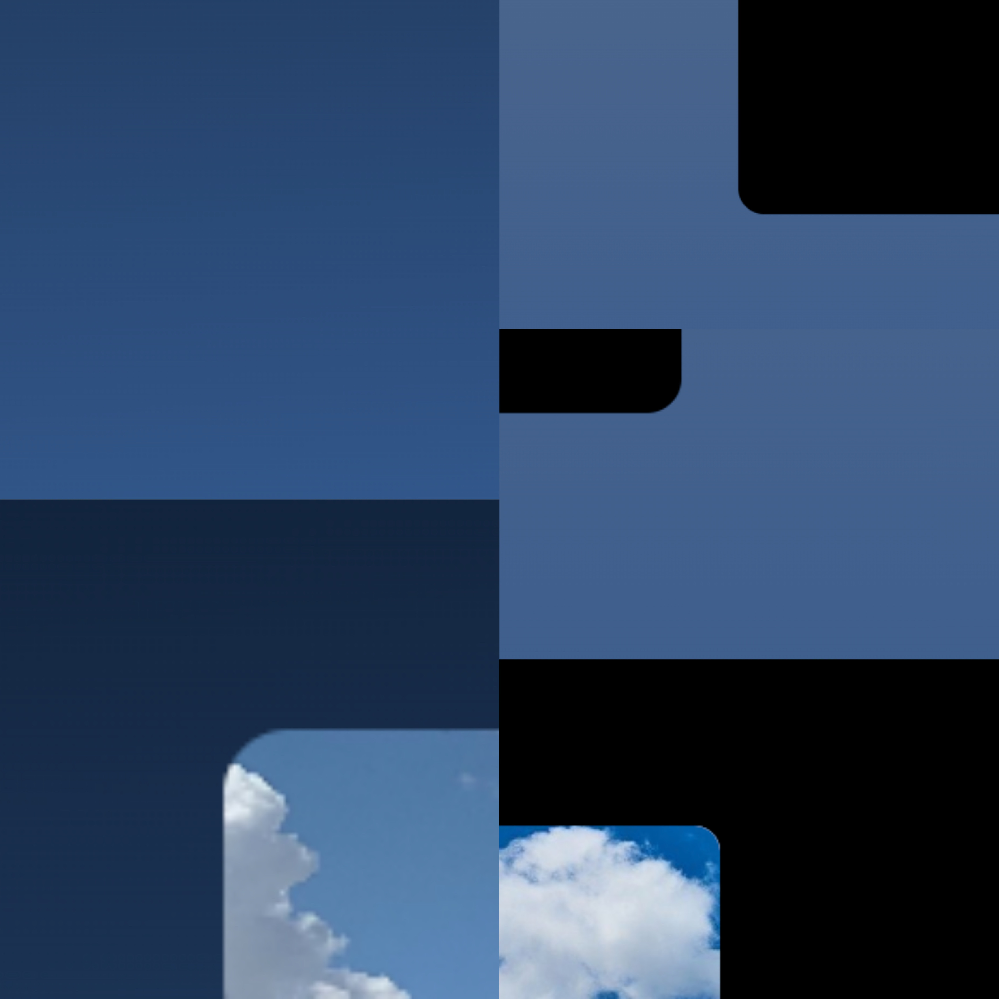

Обновление от 01.11.22
Обновился блок новостей, даты справа (или на картинке в мобильной версии) кликабельны, можно смотреть хронологию обновления.
Масштабно обновился блок 2-го курса, добавилось много материала!
Масштабно обновился блок 2-го курса, добавилось много материала!

Обновление от 02.10.22
Спустя долгое время ремонт обновился. В основном поменялся внешний вид, изменились основные цвета, стало меньше градиента. Из мелких изменений можно отметить корриектировку отступов, исправление неправильных ссылок.
01.11.22
02.10.22